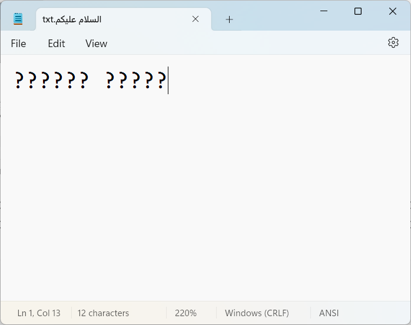

abcdefghijklmnopqrstuvwxyzABCDEFGHIJKLMNOPQRSTUVWXYZ
!"#$%&'()*+,-./:;<=>?@[\]^_`{|}~14 دقائق النصوص
14.1 ترميز الحروف
ترميز الحروف هي عملية تعيين أرقام للأحرف الرسومية مما يسمح بتخزينها ونقلها وتحويلها باستخدام الحواسيب الرقمية.
رموز ASCII تحتوي على 128 حرف للغة الإنجليزية وبعض علامات الترقيم. منها 95 فقط هي أحرف قابلة للطباعة أما البقية فتسمى أحرف تحكُّم (مثل حرف السطر الجديد \n ، وحرف الرجوع لبداية السطر \r).
ثم امتدت عن طريق رموز ANSII لتغطي أحرف إضافية (من 128 إلى 255) وهي الأحرف الاتينية للغات الأخرى.
لنستكشف السلاسل عن طريق حزمة من المكتبة الأساسية string. الآتي الأحرف اللاتينية الكبيرة والصغيرة، وعلامات الترقيم:
14.2 ترميز Unicode
واليوم رموز Unicode تحتوي على أكثر من مليون حرف لتغطية لغات العالم كافة: اللاتينية، اليونانية، السيريلية، الأرمنية، العبرية، العربية، السريانية، الثانا، الديفاناغارية، البنغالية، الجورموخية، الأورية، التاميلية، التيلوغوية، الكانادية، المالايالامية، السنهالية، التايلاندية، اللاوية، التبتية، الميانمارية، الجورجية، الهانغول، الإثيوبية، الشيروكية، الرموز الكندية الأصلية، الخميرية، المنغولية، الهان (الأيدوغراف الياباني، الصيني، الكوري)، الهيراغانا، الكاتاكانا، واليي. المصدر. وما يزال أول 128 حرف منها متطابق مع رموز ASCII.
مثال
ماذا يحصل لو كتبنا حروف عربية ثم حاولنا حفظ الملف بترميز ASCII ولم نحفظه بترميز Unicode؟

الخطأ يقول: “This file contains characters in Unicode format which will be lost if you save this file as an ANSI encoded text file. To keep the Unicode information, click Cancel below and then select one of the Unicode options from the Encoding drop down list. Continue?”
14.3 كيف يتم تمثيل النصوص في بايثون؟
تمثيل النصوص في بايثون يكون عن طريق النوع str؛ يُعرَّف بكتابة سلسلة من الأحرف لكن في الواقع تتحول إلى سلسلة من رموز Unicode (أي: أرقام). هذا يعني أنها قد تكون سلسلة رموز لاتينية أو عربية أو صينية أو غير ذلك مما تحويه رموز Unicode.
الدالة المدمجة ord() تقوم بتحويل الحرف إلى رقم الرمز. بينما chr() تعكس ذلك (من الرمز إلى الحرف).
على النقيض من سي وجافا؛ لا يوجد نوع خاص بالحرف الواحد (char) في بايثون.
print(ord("A"), ord("Z"))
print(chr(65), chr(90))
print(ord("a"), ord("z"))
print(ord("0"), ord("9"))65 90
A Z
97 122
48 57ماذا عن الحروف العربية؟ أين تقع في أرقام ترميز Unicode؟
# Arabic Unicode points are between 1536 and 1791
print(ord("أ"), hex(ord("أ")))
print(ord("ب"), hex(ord("ب")))
print(ord("ي"), hex(ord("ي")))
print(ord('َ'), hex(ord('َ')))
print(ord('ُ'), hex(ord('ُ')))1571 0x623
1576 0x628
1610 0x64a
1614 0x64e
1615 0x64fراجع ويكيبيديا: النص العربي في Unicode لمزيد من التفاصيل.
14.4 المحاذاة والحشو (Alignment and Padding)
طريقة ممتعة لتزيين سلسلة نصية باستخدام دالة center:
********************
********Adam********
********************جرب
قم بصياغة الكود السابق لتعريف ثلاثة متغيرات واستخدامها في تزيين الاسم:
namewidthdecorator
14.5 تنسيق الأرقام
محاذاة الأرقام
يمكننا أيضًا جعل كل من العدد n والتعبئة p متغيرات:
بشكل افتراضي، يتم محاذاة الرقم إلى اليمين. يمكننا محاذاته إلى اليسار بإضافة <. لاحظ الفرق بين التعبيرين أدناه:
فاصل الآلاف
الترميز العلمي (Scientific Notation)
الأعداد العشرية (Decimals)
10.5689
10.5689
10.57
11مثال: تنسيق الكم المالي
هنا نستخدم مكونين داخل الأقواس المعقوفة وعلامة $ في البداية: - يتم إضافة علامة $ قبل الرقم (ليست جزءًا من الرقم المنسق على الإطلاق) - , تضيف فاصل الآلاف - .2f يقوم بتقريب الرقم إلى منزلتين عشريتين
تنسيق كتابة القيَم العددية الثابتة (Number literal formats)
الحروفيَّة هي رموز للقيم الثابتة لبعض الأنواع المدمجة. مثال: 42 هو حرفيُّ عدد صحيح و 3.14 هو حرفيُّ عدد عشري.
تسمح بايثون بطرق أكثر قابلية للقراءة في كتابة الحروفية العددية:
- يمكن استخدام الشرطة السفلية
_في الأرقام لفصلها لتحسين القراءة - يمكن استخدام
eأوEلتمثيل الترميز العلمي 0bأو0Bللأرقام الثنائية0oأو0Oللأرقام الثمانية0xأو0Xللأرقام الست عشريةjأوJللأعداد المركبة
وإليك تطبيق ذلك: